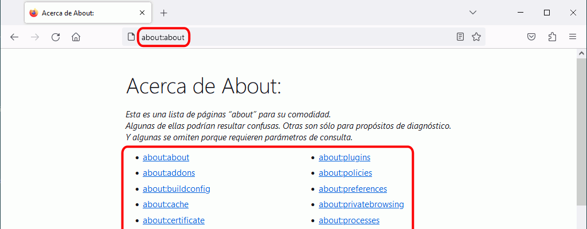
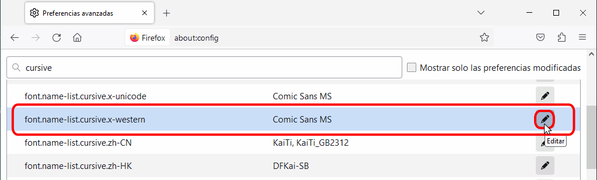
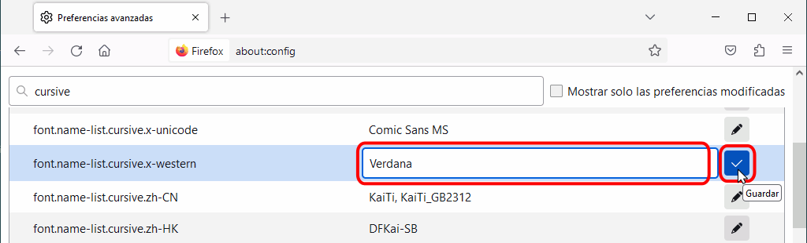
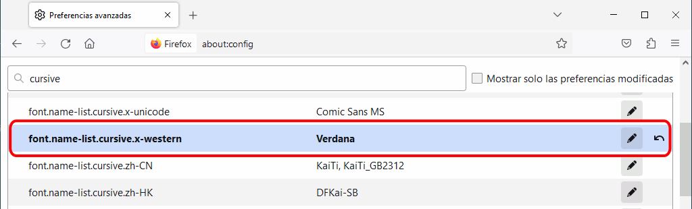
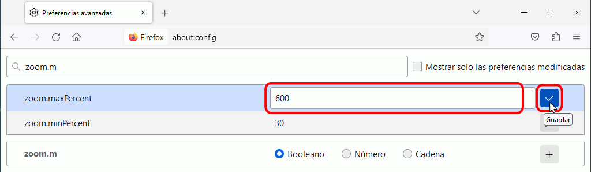
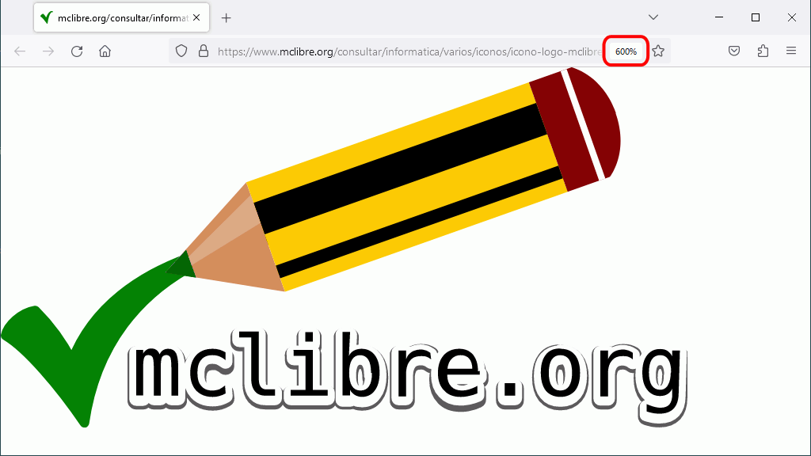

Firefox admite muchísimas más opciones de configuración que las que están disponibles mediante el menú (que se explican en la lección Configuración básica de Firefox). En esta página se explica cómo acceder al resto de opciones y algunos ejemplos.
 Las capturas de esta lección no están actualizadas, por lo que seguramente serán distintas de lo que se ve en la última versión.
Las capturas de esta lección no están actualizadas, por lo que seguramente serán distintas de lo que se ve en la última versión.
Firefox ofrece mucha información interna en las páginas about:. Para mostrar la lista de páginas about: disponibles, hay que escribir en la barra de dirección de Firefox la dirección about:about.

La página about:about contiene enlaces a diferentes páginas about: (más información en la Wikipedia)
| Dirección | Información mostrada |
|---|---|
| about:about | Lista de páginas about. Actualmente (septiembre de 2018) parece incompleta |
| about:addons | Administrador de complementos |
| about:blocked | Página que se muestra cuando la página es peligrosa (porque contiene malware) |
| about:buildconfig | Compilación de Firefox |
| about:cache | Muestra información de Caché de memoria, de disco y de aplicaciones |
| about:certerror | Página que se muestra cuando el certificado de la página no es válido |
| about:checkerboard | Información de registro de checkerboard |
| about:config | Opciones de configuración avanzada |
| about:crashes | Información enviada a los autores sobre los "cuelgues" de Firefox |
| about:credits | Listado de nombres y apellidos de contribuidores al desarrollo de Firefox |
| about:debugging | Página de depuración de complementos |
| about:devtools | Página de activación de las herramientas de desarrollador |
| about:downloads | Página de descargas realizadas |
| about:feed | Página que se muestra cuando se hace clic en el icono de feed RSS de la barra de dirección |
| about:home | Página de inicio |
| about:library | |
| about:license | Licencias de Firefox |
| about:logo | logo de Firefox |
| about:memory | Informes sobre el uso de la memoria RAM |
| about:mozilla | Cita del ficticio Libro de Mozilla que bromea sobre la falta de desarrollo de Internet Explorer (tras la derrota de Netscape en la guerra de los navegadores) y la aparición y éxito de Mozilla / Firefox |
| about:networking | Información sobre el tráfico de red (experimental) |
| about:newtab | Página de inicio de Firefox |
| about:performance | Información sobre el funcionamiento de las pestañas |
| about:plugins | Plug-ins instalados |
| about:preferences | Opciones de configuración de Firefox |
| about:privatebrowsing | Abre una ventana de navegación privada |
| about:profiles | Información sobre los perfiles de Firefox existentes en el ordenador |
| about:rights | Lista de derechos del usuario de Firefox |
| about:robots | Saludo de los robots a los humanos |
| about:searchreset | Página de restauración de configuración de búsqueda |
| about:serviceworkers | Información sobre los Service Workers registrados |
| about:sessionrestore | Página de notificación de error al restaurar sesión |
| about:studies | Información sobre los estudios (por ejemplo, pruebas de componentes) realizados por Firefox |
| about:support | Información para solucionar problemas de funcionamiento |
| about:sync-log | Archivos log del servicio Sync |
| about:sync-tabs | Lista de pestañas sincronizadas (requiere Sync) |
| about:tabcrashed | Página de aviso de fallo de pestaña |
| about:telemetry | Inforamción recopilada por Telemetry y enviada a Mozilla |
| about:url-classifier | Información del clasificador de URL |
| about:webrtc | Información sobre WebRTC |
| about:welcome | Página final de la instalación de Firefox |
| about:welcomeback | Página final del proceso de restauración de Firefox |
Para ver una lista detallada de todas las opciones de configuración de Firefox, se debe escribir en la barra de dirección about:config y pulsar Return.
Salvo que se haya desactivado esta advertencia, Firefox muestra la siguiente advertencia, recordando al usuario que las opciones de configuración sólo deben realizarse con mucho cuidado y sabiendo qué se está cambiando y por qué se desea realizar el cambio.
Si se hace clic en el botón "¡Tendré cuidado, lo prometo!" se muestra la página about:config.
Cada línea de esta ventana muestra el nombre de la preferencia, su estado, su tipo y su valor. Estas preferencias pueden modificarse o eliminarse y también se pueden añadir nuevas preferencias.
Al escribir en el campo de texto Filtro alguna palabra, la ventana muestra únicamente las preferencias en las que aparece esa palabra (en el nombre o en el valor), como muestra la imagen siguiente:
Falta contar que las preferencias modificadas y añadidas se añaden al archivo prefs.js que está en C:\Documents and Settings\nombre_de_usuario\Datos de programa\Mozilla\Firefox\Profiles\loquesea.default. [confirmar que es realmente así]
En Windows, la familia genérica cursive suele mostrarse con la fuente Comic Sans MS (de Microsoft).
Para modificar esta preferencia, abra la página about:config y busque la cadena "cursive". La fuente cursive está definida en la preferencia font.name.list.cursive.x-western.

Para modificar la fuente empleada, haga clic derecho sobre la preferencia y elija la opción Modificar:

Se abrirá una ventana en la que aparece el nombre de la fuente que se emplea actualmente:

Escriba el nombre de la fuente que desea emplear en su lugar y haga clic en el botón Aceptar. En este ejemplo se ha sustituido la fuente Comic Sans MS por la fuente Verdana (que realmente es una fuente de la familia sans-serif, pero se utiliza aquí como ejemplo porque está incluida en Windows).

El cambio se muestra inmediatamente en la ventana about:config.

A partir de ese momento, la familia cursive se mostrará utilizando la nueva fuente (en este caso Verdana).
Para restablecer la fuente anterior, haga clic derecho sobre la preferencia y elija la opción restablecer:
El cambio se muestra inmediatamente en la ventana about:config.
Firefox no permite elegir la fuente correspondiente a la familia genérica fantasy
Firefox permite ampliar una página hasta el 300%, pero ese valor puede aumentarse en la página about:config.
La imagen siguiente se muestra a su tamaño original:
El zoom máximo predeterminado de Firefox es 300%, lo que permite ampliar la imagen anterior al triple de su tamaño original:
Para aumentar el valor del zoom máximo, abra la página about:config.
La preferencia a modificar es zoom.maxPercent. Escribiendo su nombre en la caja de búsqueda, nos aparecerá en la lista de preferencias. En esa lista puede confirmarse que el valor actual es el valor predeterminado 300%.
Haga clic derecho en la fila de la preferencia y en el menú contextual, elegir la opción Modificar.
En la ventana emergente escriba el valor máximo deseado, por ejemplo 500%, y haga clic en el botón Aceptar.

En la lista de preferencias se puede comprobar que el valor se ha modificado.
La imagen puede ahora ampliarse más de lo que se podía antes.

Nota: Actualmente (septiembre de 2018), la ampliación hasta el nuevo valor se tiene que hacer con Ctrl y la rueda del ratón, pero no con el atajo de teclado Ctrl + +, que no puede superar el valor inicial de 300%.